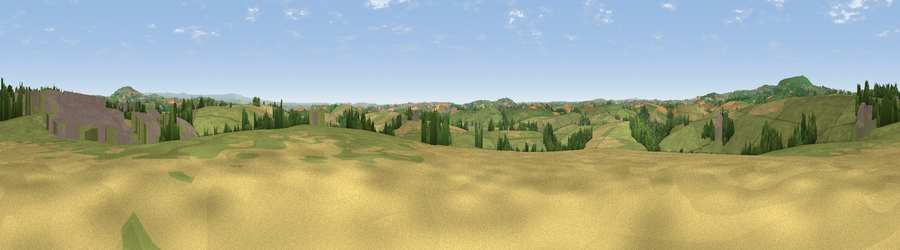

Viewpoint near Quethiock
#21663 in England · top 37% of its area beats it · near QuethiockThe view, rendered

A 360° render of this exact spot computed from the terrain model, tree cover and land cover — summer colours, afternoon light, calibrated against photographs of famous viewpoints. Real trees, hedges and buildings will differ in detail.
The panorama
Grey silhouette: terrain skyline in each direction (720 bearings, Earth curvature and refraction included). Dashed green: skyline with trees (+15 m) and buildings (+8 m) as obstacles. Blue strip: how far the ground is visible on each bearing.
Where the view opens
Wedge length = distance to the farthest visible ground on that bearing (vegetation-aware). Rings at 10, 25 and 50 km.
What fills the view
70% grassland · 17% cropland · 7% built-up · 7% woodland
Angular shares of the visible panorama (visual magnitude), not map area. Landscape diversity 0.40 (0–1 Shannon).
Key numbers
More beautiful places nearby
The staircase of upgrades: each row has a higher view potential than everything closer. Driving times are estimates from straight-line distance, calibrated against real road routing — check an actual route before setting out.
| Place | Direction | Drive | Score |
|---|---|---|---|
| Trewoodgate Hill | SE · 3 km | ~7 min | 61.3 |
| Viewpoint near Menheniot | S · 5 km | ~11 min | 64.0 |
| Caradon Hill | NW · 6 km | ~13 min | 78.5 |
| Kit Hill | NE · 8 km | ~16 min | 80.3 |
| Viewpoint near Seaton | S · 12 km | ~22 min | 81.1 |
| Viewpoint near Downderry | S · 12 km | ~22 min | 81.5 |
| Viewpoint near Downderry | SSE · 12 km | ~23 min | 83.5 |
| Viewpoint near Polperro | SW · 20 km | ~33 min | 83.7 |
50.47100, -4.38183 · source: screening · position refined by local search. Computed location — check access rights before visiting.